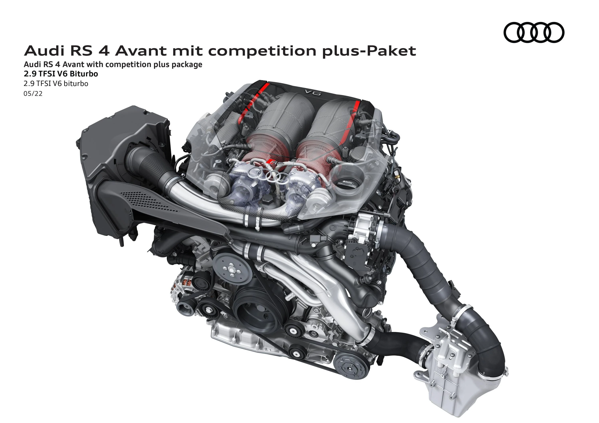

Áttekintés-Külső
Határtalan erő és lenyűgöző menetteljesítmények - ezt közvetíti már álló helyzetben is az Audi RS 4
Avant izmos hatást keltő megjelenése, amiről olyan jellegzetes RS-dizájnjegyei gondoskodnak, mint az új
Singleframe hűtőrács, a méhsejt-mintázatú rácsozat újszerű interpretációjával, valamint az új
fejlesztésű kiegészítő elemekkel kialakított, RS-specifikus első lökhárítóval teljes egészében
átdolgozott, hangsúlyos orrkialakítása. Hátul ugyancsak RS-specifikus lökhárító és feltűnő diffúzorelem
erősíti a sportos benyomást, miközben az új keréktárcsa-dizájn és a kiszélesített kerékjáratok éppúgy
markáns stílusjegyként szolgálnak, mint a különböző - fekete, a karosszéria színére fényezett vagy épp
szénszálerősítésű műanyag (karbon) elemekből összeállított - külső dizájncsomagok.
Az Audi RS 6 Avant futóművével mindent egy lapra tehet fel, az alapkivitelhez tartozó RS
sport-légrugózás ugyanis opcióként akár 305 kilométer/óra csúcssebességet is lehetővé tesz. Karakterét
hosszútávú kényelemre vagy épp csúcsteljesítményre hangolva, a különböző üzemmódokkal Ön a vezetés más
és más élményét élvezheti. A Dynamic Ride Control technikájával kiegészített, extrafelszerelésként
kínált RS-sportfutómű plusz a karosszéria oldalirányú billenő, illetve hosszirányú bólintó mozgásait
jelentősen mérsékelve csúcsszínvonalú irányíthatósági tulajdonságokat ígér. Ne csupán elismerő
pillantásokat gyűjtsön, hódítsa meg az utat is!
Áttekintés-Belső
Az Audi RS 4 Avant 2,9 literes, V6-os TFSI-motorja (üzemanyag-fogyasztás, kombinált: 9,2 l/100 km;
szén-dioxid-kibocsátás, kombinált: 210-211 g/km) 331 kW (450 LE) teljesítménnyel és 600 newtonméter
maximális forgatónyomatékkal kínálja az egész család számára az autózás színtiszta élvezetét. Álló
helyzetből mindössze 4,1 másodperc alatt gyorsít fel 100 kilométer/órás tempóra, végsebessége pedig 250
kilométer/óra, ami az extrafelszerelésként kínált RS-dinamikacsomag részeként akár 280 kilométer/órára
is felemelhető. A sport-differenciálművel kiegészített quattro állandó összkerékhajtás mindenkor
hatékony vonóerőátadási képességeket és agilis irányíthatósági tulajdonságokat biztosít. Az Audi RS 4
Avant extrafelszerelésként rendelhető RS-dinamikacsomagja az Ön egész testén érzékelteti a fizika
törvényeit - egyaránt erről gondoskodik a dinamikus kormányzás, a sport-differenciálművel kiegészített
quattro összkerékhajtás és a Dynamic Ride Control (DRC) technikájával működő RS-sportfutómű plusz. Az
alapkivitelhez tartozó Audi drive select menetdinamikai szabályzórendszer igencsak vonzóan, széles
palettán biztosítja a vezetés élvezetes élményét, mielőtt a motor 280 kilométer/órás végsebességnél
elektronikusan leszabályozna. A biztonságos megállásról az alapkivitel - opcióként vörösre fényezett
féknyergekkel is rendelhető - RS-fékberendezés vagy az extrafelszerelésként rendelhető - szürke, vörös
vagy kék féknyereggel választható - RS-kerámiafékek gondoskodnak.
Sportos karakterével korántsem csupán kívülről bizonyul meggyőzőnek az Audi RS 4 Avant, hanem belterében
is, amiről már alapkivitelben az alumínium sebességváltó-kapcsolóbillentyűkkel szerelt, alul
egyenesített karimájú, bőrbevonatú és multifunkciós RS-sportkontúr-kormánykerék gondoskodik, akárcsak a
fekete Feinnappa bőrrel borított és crescendo-vörös, méhsejtmintázatú díszvarrásokkal steppelt első
RS-sportülések. Igény szerint az extrafelszerelésként rendelhető vörös RS-dizájncsomag szolgálhat
további részletekkel, míg az opcionális többszínű kontúr-/hangulatvilágítás-csomag a harmonikus
összhatást erősítheti.